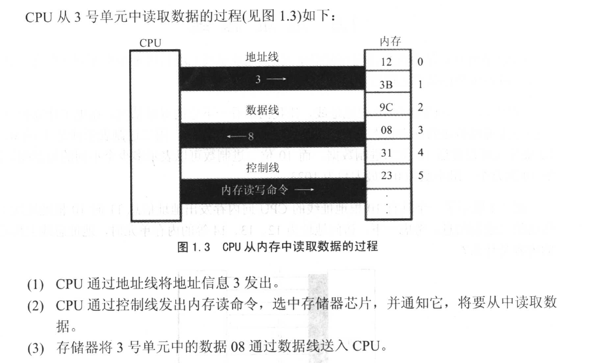
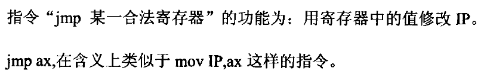
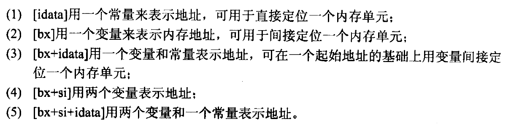

汇编基础
汇编基础简介
以16位8086CPU为基础进行拓展。
机器语言是机器指令的集合，汇编语言的主体是汇编指令，汇编指令是机器指令的助记符，同机器指令一一对应
每一种CPU都有自己的汇编指令集，编译器将汇编语言编译为机器码
汇编指令一般格式：[标号：]指令助记符[操作数表]
汇编语言指令分类
1 | 汇编指令：机器码的助记符，有对应的机器码。 |
存储器也就是内存，指令和数据存放于此，CPU指令和数据的来源
在内存个磁盘上，指令和数据没有区别，都是二进制形式存放
存储器被划分为若干存储单元，从0编号，大多是8bit
CPU要从内存中读数据，首先要确定存储单元的地址。
CPU要想进行数据的读写，必须和外部器件(标准的说法是芯片)进行3类信息的交互
- 存储单元的地址(地址信息)。
- 器件的选择，读或写的命令(控制信息)。
- 读或写的数据(数据信息)。
数据读取过程

CPU通过地址总线来指定存储器单元，地址总线能传输多少不同信息，CPU就可以对多少个存储单元寻址
CPU通过数据总线与内存或其他器件之间进行 数据传送，数据总线的宽度决定CPU与外界数据的传送速度
CPU通过控制总线对外部期间器件控制，有多少根控制总线，CPU就对外部器件有多少种控制。
寄存器
一个32位寄存器可以存储一个32位的数据。
在IA-32系列CPU中，有8个通用寄存器，分别是EAX，EBX，ECX，EDX，ESP，EBP，ESI，EDI
以EAX为例，AX为低16位，AL为AX低8位，AH为AX高8位。
字节：记为byte，一个字节由8 个比特(即二进制位)组成，可以存在8位寄存器中
字：记为word，一个字节由两个字节组成 ，又分为高位字节和低位字节。
CPU访问内存单元时，要给出内存单元的地址。所有的内存单元构成的存储空间是一 个一维的线性空间，每一个内存单元在这个空间中都有惟一的地址，我们将这个惟一的地 址称为物理地址。CPU通过地址总线送入存储器的必须是一个内存单元的物理地址。
32位寄存器的结构特性
- 运算器一次最多可以处理32位的数据
- 寄存器的最大宽度位32位
- 寄存器与运算器之间的通路为32位
8086CPU中地址总线为20位，采用两个16位地址合成的方法来形成一个20位为物理地址（段地址和偏移地址）
1 | 物理地址=段地址*16+偏移地址 |
CS代码段寄存器和IP指令指针寄存器
设CS内容为M，IP内容为N，CPU将从内存M*16+N单元开始，读取一条指令并执行。
[ADDress]表示一个偏移地址位ADDress的内存单元。
在CPU中，程序员能狗用指令读写的部件只有寄存器，可以通过更改CS，IP的内容控制CPU执行目标命令（转移指令）

字单元，即存放一个字型数据(16位)的内存单元，由两个地连续的内存单元组成。高地址内存单元中存放字型数据的高位字节，低地址内存单元中放字型数据的低位字节（高对高低对低）。
DS寄存器存放要访问数据的段地址
MOV指令的几种形式
1 | MOV DEST，SRC |
ADD指令的几种形式
1 | ADD DEST，SRC |
INC指令
1 | INC DEST |
DEC指令
1 | DEC DEST |
SUB指令的几种形式
1 | SUB DEST，SRC |
XCHG的操作数可以是通用寄存器或存储单元，但不能同时时存储单元，也不能有立即数。
XCHG指令的几种形式
1 | XCHG OPRD1,OPRD2 |
8086CPU提供入栈和出栈指令。
PUSH（入栈）和POP（出栈）
PUSH指令的几种形式
1 | PUSH 寄存器 |
POP指令的几种形式
1 | POP 寄存器 |
段寄存器SS和栈顶指针寄存器SP（ESP），任意时刻SS:SP指向栈顶元素。8086CPU中，入栈是，栈顶从高地址向低地址方向增长。
LOOP指令
CPU在执行loop操作有两个步骤
- （CX）=（CX）-1
- 判断CX的值，不为零则跳转到标号，为令则继续向下运行
1 | MOV CX,循环次数 |
AND指令的几种形式
1 | AND 寄存器,数据 AND al,00100011B |
OR指令的几种形式
1 | OR 寄存器,数据 OR al,00100011B |
定位内存地址的方法

数据处理
reg：寄存器
sreg：段寄存器
数据的位置
- 立即数
- 寄存器
- 段地址（SA）和偏移地址（EA）
DIV指令
除数：8位或16位，在寄存器或内存单元中
被除数：（默认）放在 AX（16位）或 DX和AX（32位）中。
如果除数是8位，则AL存储商，AH储存余数，如果除数是16位，AX储存商，DX储存余数。
1 | 186A1/100 |
转移指令
可以修改IP，或同时修改CS和IP的指令统称为转移指令
8086CPU的转移指令行为分类
只修改IP时，称为段内转移，如：JMP AX
同时修改CS和IP时，称为段间转移，如JMP 1000:0
8086CPU的转移指令对IP修改范围分类
短转移IP的修改范围-128~127
近转移IP的修改范围-32768~32767
8086CPU的转移指令分类
- 无条件转移指令
- 条件转移指令
- 循环指令
- 过程
- 中断
操作符offset在汇编语言中是由编译器处理的符号，它的功能是取得标号的偏移地址。
1 | start:MOV AX,offset start相当于MOV AX,0 |
JMP指令
JMP为无条件转移指令，可以只修改ip，也可以同时修改CS和IP。
JMP指令要给出两种信息：
- 转移的H的地址
- 转移的距离(段间转移、段内短转移，段内近转移)
条件转移指令JCC LABEL
单个标志条件
| 指令 | 英文 | 含义 | 格式 | 测试条件 |
|---|---|---|---|---|
| JZ/JE | jump if zero/equal | 结果为零/相等则转移 | JZ/JE OPR | ZF=1 |
| JNZ/JNE | jump if not zero/equal | 结果不为零/不相等则转移 | JNZ/JNE OPR | ZF=0 |
| JS | jump if sign | 结果为负则转移 | JS OPR | SF=1 |
| JNS | jump if not sign | 结果为正则转移 | JNS OPR | SF=0 |
| JO | jump if overflow | 溢出则转移 | JO OPR | OF=1 |
| JNO | jump if not overflow | 不溢出则转移 | JNO OPR | OF=0 |
| JP/JPE | jump if parity/parity even | 奇偶位为1则转移 | JP/JPE OPR | PF=1 |
| JNP/JNPE | jump if not parity/parity even | 奇偶位为0则转移 | JNP/JNPE OPR | PF=0 |
| JB/JNAE/JC | jump if below/not above、not equal/carry | 低于/不高于或不等于/进位为1则转移 | JB/JNAE/JC OPR | CF=1 |
| JNB/JAE/JNC | jump if not below/ above、equal/not carry | 不低于/高于或等于/进位为零则转移 | JNB/JAE/JNC OPR | CF=0 |
比较两个无符号数
| 指令 | 英文 | 含义 | 格式 | 测试条件 | 等价于 |
|---|---|---|---|---|---|
| JB/JNAE/JC | jump if below/not above、not equal/carry | 低于/不高于或不等于/进位为1则转移 | JB/JNAE/JC OPR | CF=1 | < |
| JNB/JAE/JNC | jump if not below/ above、equal/not carry | 不低于/高于或等于/进位为零则转移 | JNB/JAE/JNC OPR | CF=0 | ≥ |
| JBE/JNA | jump if below/equal、not above | 低于/等于、不高于则转移 | JBE/JNA OPR | CF并ZF=1 | ≤ |
| JNBE/JA | jump if not below/not equal、above | 不低于/不等于、高于则转移 | JNBE/JA OPR | CF并ZF=0 | > |
比较两个有符号数
| 指令 | 英文 | 含义 | 格式 | 测试条件 | 等价于 |
|---|---|---|---|---|---|
| JL/JNGE | jump if less、not greater/equal | 小于、不大于/不等于则转移 | JL/JNGE OPR | SF异或CF=1 | < |
| JNL/JGE | jump if not less、greater/equal | 不小于、大于/等于则转移 | JNL/JGE OPR | SF异或CF=0 | ≥ |
| JLE/JNG | jump if less/equal、not greater | 小于/等于、不大于则转移 | JLE/JNG OPR | (SF异或CF)并ZF=1 | ≤ |
| JNLE/JG | jump if not less/not equal、 greater | 不小于/不等于、大于则转移 | JNLE/JG OPR | (SF异或CF)并ZF=0 | > |
标志寄存器
CF进位标志
ZF零标志
SF符号标志
OF溢出标志
PF奇偶标志
AF辅助进位标志
CLC指令
1 | CLC |
STC指令
1 | STC |
CMC指令
1 | CMC |
LAHF指令
1 | LAHF |
SAHF指令
1 | SAHF |
ADC指令
1 | ADC DEST,SRC |
SBB指令
1 | SBB DEST,SRC |
LEA指令
1 | LEA REG,PORD |
CMP指令
1 | CMP DEST,SRC |